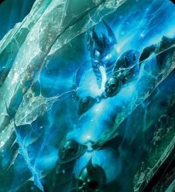

A Lich King(Lidérc Király) a Scourge-nek mestere és ura, amit a Frozen Throne-ról ural, Icecrown Glacier tetején. Kil'jaeden teremtette a Lich King-et, az ork sámán lelkéből, Ner'zhulból, hogy az egy élőholt sereggel foglalja el Azerothot. Elentie a Frozen Throne-ba volt bezárva a Frostmourne-al. Elhatározta, hogy elárulja Kil'jaedant és egybeolvad az emberrel, Arthas Menethil-lel, később a terve sikerült. A Northrend-ért vívott csata végén, a Lich King elbukott Highlord Tirion Fordring és az ő Fényes serege ellen. A Frostmourne megsemmisítésével és Arthas halálával, Bolvar Fordragon magához ragadta a Lich Király erejét és bezárta a Frozen Throne-ba. A Lich King a főellenség a World of Warcraft: Wrath of the Lich King-ben, Michael McConnohie szólaltatta meg.
Előzmények
Habár a Lángoló Légió egyértelmű vereséget szenvedett az Ősök Háborúja idején, sokan nem adták fel az Azeroth elpusztítására szőtt tervüket. Ilyen volt például a Légió toborzója és egyben egyik fővezére az Eredar Kil'jaeden. Sötét mágiáján kívül manipuláló képessége is kiváló, így rátudta venni a Draenoron élő Orkokat, hogy a Légió zászlaja alatt pusztítsák el az ellenségeiket a Draeneieket. A Draenei főváros, Shattrath City lerombolása után szemüket Azeroth felé szegezték. Az átkelést egy Medivh nevű varázsló segítette, akit valójában a Légió fővezére, Sargeras szállt meg. Az emberekkel való viaskodásuk sok évtizeden át tartott, mígnem a Feketeszikla Hegyi csatát követően vereséget szenvedett.
Ner'zhul, az Első
Az orkok nem mindig voltak ilyen vad teremtmények. Egykor ősi szellemeiket követve békésen vadásztak Nagrand pusztaságán. Fősámánjuk Ner'zhul oltalmazó tekintete alatt az Orkok legbékésebb napjaikat élhették. Ám a sámán előtt megjelent Kil'jaeden -Ner'zhul feleségének képében, aki mellesleg meghalt- és azt hazudta, hogy a Draeneiek támadást szerveznek a népe ellen és tennie kell valamit. Ner'zhul hitt a látomásnak és hamarosan összehívta az Ork törzsfőket, hogy megvitassák a problémát. A törzsszövetség végig prédálta Draenort, ám Ner'zhul kegyelmes taktikája nem volt elég, hogy megszerezzék a végső győzelmet.
Ráadásul a sámán érezte, hogy a szellemek távolodnak tőle, ezért oda ment, ahol a legérezhetőbb az őseik jelenléte: Oshu'gunba. Itt a felesége valódi szelleme jelent meg és felfedte előtte az átverését. Ezt követően azonnal le akarta fújni a háborút, ám hatalom-éhes tanítványa, Gul'dan leleplezte tervét Kil'jaeden előtt, aki ártalmatlanná tette Ner'zhult (nem a megölésére célzok). Ezt követően az Orkokat Gul'dan Hordává szervezte, majd átkeltek a Sötét Portálon és megkezdődött az Első Háború, majd az emberek bukásával a Második, melyet a Lordaeron-i Szövetség megnyert. Az Orkok a Sötét Portálig menekültek. Ner'zhul-al az első Halállovag Teron Gorefiend közölte a rossz hírt és ezzel együtt felszabadította a sámán. Ezt követően a halállovag meggyőzte Ner'zhult, hogy élessze újra a Hordát és nyisson meg új portálokat, majd azokat leigázva visszakapják az orkok az életkedvüket. Az általa vezetett Sötéthold Klánnal az élen megkezdte a Horda kiépítését és a központját a Pokoltűz Citadellába helyezte. Innen küldte el Pokolsikoly Gromot és Hóttszem Kilroggot, hogy szerezzék meg neki a portál megnyitásához szükséges tárgyakat, melyek közt volt egy különösen értékes. Ez az ereklye nem más volt, mint Gul'dan Koponyája, melynek sötét energiái Ner'zhul elméjét is kezdték ködbe borítani. Már nem az Orkok, hanem a saját érdekeit kezdte szem előtt tartani. A megállítására áttért a Sötét Portálon a Lordaeron-i Szövetség expedíciója, mely több Horda elleni támadással nehezítette a sámán dolgát. Végül a portálok elkészültek és meg is nyitották őket, ám ez rossz hatással volt a bolygóra. Több térkapu nyitása komoly mágia-mennyiséget követelt, melynek felgyülemlése darabokra szakította a bolygót, majd kilökte azt az Örvénylő Éterbe. A Draenorból maradt legnagyobb darabot ma Outlandként ismerjük. Szerencsére Ner'zhul átjutott a portálon, ám az Örvénylő Éterben kötött ki egyenesen Kil'jaeden orra előtt.
A Lidérc Király Születése
Az eredar bosszút akart állni a Horda veresége miatt és ezt Ner'zhul szenvedte meg. Testét széttörték apró darabokra, ám lelke életben maradt, hogy a boszorkány tovább kínozhassa, meg persze még tervei voltak vele.
Kil'jaeden az Örvénylő Éter legtávolibb sarkaiból jeget hozatott, majd a legsötétebb acélból sisakot és egy kardot kovácsoltatott, melybe Ner'zhul lelkét helyezte. A fegyvert és a sisakot beleillesztve a jégtömbbe lehajította azt Azeroth északi kontinensére, Északszirtre, ahol a Jégkorona Gleccserben ért földet. Repülés közben a jégtömb két darabra tört és az egyik egy Sárkánymétely-i barlangban ért földet. A másik darab becsapódása egy óriási krátert okozott csupán egyetlen csúcsot meghagyva, melyet Fagyott Trónnak nevezünk. Ner'zhul úgy érezte a jégtömbben elméje kitágult és, hogy bármire képes. Az öreg sámán immár megszűnt létezni, nem maradt belőle más csupán a Lidérc Király. Első parancsát Kil'jaeden kémjeitől a Natherzimektől kapta, akik mellesleg Ner'zhul kordában tartását kapták feladatul. A Lidérc Király első feladata az Északszirten lévő Lordaeron-i gyarmatok elpusztítása volt, nem akármilyen módon. A gleccser ura sötét nekromanciájával képes volt járványokat létrehozni. Már az első próbálkozása is meglepően jól sikeredett. A kísérlet végső fázisához az embereket is felhasználta. Elterjesztett köztük egy fertőzést, mely szörnyű kínhalálban részesíti őket és mindezek után esztelen élőholtként születik újjá.
Részletes leírásért látogasd meg: https://wowwiki.fandom.com/hu/wiki/Lid%C3%A9rc_Kir%C3%A1ly
A Lidérc Király Bosszúja
A hibernálódásból felébredve Arthas útnak indította Necropolisait, Orgrimmar és Viharvárad felé, melynek a figyelemfelkeltés volt a célja.
Tervei szerint Azeroth legjobb harcosait csalva Északszirtre, majd ott legyőzve őket a saját sorait dúsította volna velük, ám nem számított egy igen jelentős személyre: Tirion Fordringre. Az egykor száműzött paladin egyesítette az Ezüst Kéz Rendjének maradékát és az Ezüst Hajnalt egyetlen egésszé Ezüst Keresztesekké. Ezután szövetséget kötött az Ében Penge felszabadult halállovagjaival, így létrejött az Ezüstítélet. Tirion vezetésével sikeresen betörtek a Jégkorona Citadellába, majd a szörnyűségeit legyőzve véget vetettek Arthas életének is. Azonban a Lidérc Király nem szűnt meg létezni. Az emberek másik éke, Bolvar Fordragon felvállalta annak terhét, majd felvéve a sisakot ő is szembeszállt Ner'zhul akaratával és hiper-álomba zuhant.
Icecrown Citadelben 12 Boss-al kell megküzdenünk, amelyekkel különböző taktikákkal tudunk megbírkózni, ezeket alább megtekintheted.